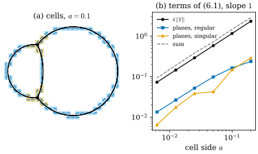
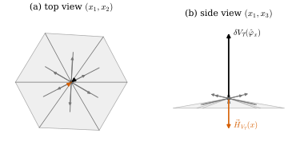

47.6 Discrete Approximation and the Cotangent Formula
Goals
- rectifiable varifold를 cell 데이터(volumetric 또는 point cloud)로 근사할 때 거리가 “cell 크기 × mass + cell 안의 plane의 흩어짐”으로 bound된다는 것(Lemma 6.1)을 증명할 수 있다.
- piecewise \(C^{1,\beta}\) varifold의 정의를 읽고, 그때 거리가 \(\delta^\beta\) 정도라는 Theorem 6.4의 증명 구조(regular cell과 singular cell)를 설명할 수 있다.
- triangle mesh의 cotangent formula가 polyhedral varifold의 first variation을 hat function에 쓴 값이라는 것(Proposition 7.1)을 유도하고, Track 2의 \(\nabla A = -L\mathbf{x}\)와 부호까지 맞출 수 있다.
- barycentric area로 나눈 cotan mean curvature가 (47.4.2)와 같은 구조임을 설명할 수 있다.
Prerequisites
- Section 47.2: mesh(cell 분할), volumetric·polyhedral varifold, Proposition 47.2.6
- Section 47.4: 수렴 정리의 가정 (47.4.10)
- Track 2: area gradient의 cotan 공식(Theorem 41.2.7), cotan Laplacian(Definition 40.3.3), FEM의 hat function과 lumped mass(Section 42.3)
Motivation
지금까지의 수렴 정리는 “\(V_i\)가 \(V\)를 국소적으로 \(d_i\) 안에서 근사한다”는 가정에서 출발했다((47.4.10)). 그런 \(V_i\)가 실제로 있는가, 있다면 \(d_i\)는 얼마인가? 논문 §6은 이 물음에 답한다. 아무 rectifiable varifold든 cell 데이터로 근사할 수 있고, 모서리와 junction을 허용하는 넓은 class에서는 거리가 cell 크기의 거듭제곱으로 bound된다. 이어서 §7은 방향을 바꾸어, 이미 널리 쓰이는 discrete curvature인 mesh의 cotangent formula가 varifold의 언어로는 무엇인지 보인다. 이 절의 둘째 부분은 Track 2(Chapter 41, Chapter 42)와 이 장이 만나는 곳이다.
Approximation by Cell Data (Section 6)
Lemma 47.6.1 (cell approximation). \(\Omega \subset \R^n\)이 open set, \(V\)가 \(\Omega\) 위의 \(d\)-varifold, \((\mathcal{K}_i)_i\)가 \(\Omega\)의 mesh의 열이고 \(\delta_i = \sup_{K \in \mathcal{K}_i}\operatorname{diam}(K)\)라 하자. 그러면 discrete(point cloud 또는 volumetric) varifold의 열 \((V_i)_i\)가 있어 모든 open set \(U \subset \Omega\)에 대해
Proof sketch. \(V_i\)는 Example 47.2.5의 구성이다. \(m^i_K = \norm{V}(K)\), \(x^i_K \in K\), \(P^i_K \in \operatorname{arg\,min}_P\int_{K \times G_{d,n}}\norm{P - S}\,dV\)로 volumetric 또는 point cloud varifold를 만든다. \(\varphi \in \mathrm{Lip}_1\), \(\supp\varphi \subset U \times G_{d,n}\)이면, 두 varifold가 cell마다 같은 mass를 가지므로 차이는 cell \(K\)마다 \(\varphi(x, P^i_K)\)와 \(\varphi(y, T)\)의 차이의 평균이다. Lipschitz 조건 \(\abs{\varphi(x, P^i_K) - \varphi(y, T)} \le \abs{x - y} + \norm{P^i_K - T}\)에서 첫 항은 \(\delta_i\norm{V}(K)\) 이하, 둘째 항은 \(\int_{K \times G_{d,n}}\norm{P^i_K - T}\,dV\)이다. \(U\)와 만나는 cell은 \(U^{\delta_i}\) 안에 있으므로 합이 (47.6.1)이다. \(\square\)
bound의 두 항이 각각 무엇인지가 중요하다. 첫 항은 위치의 오차(mass를 cell 안에서 옮기는 비용)이고, Proposition 47.2.6과 같은 종류다. 둘째 항은 plane의 오차, 곧 cell 하나에 plane을 하나만 줄 때 그 cell 안의 tangent plane들이 얼마나 흩어져 있는가다. 이 증명은 Section 47.1의 Conventions 상자에서 말한 거리 \(\abs{x - y} + \norm{P - S}\)를 그대로 쓴다.
둘째 항이 언제 작은지를 정량화하려면 varifold에 regularity가 필요하다. 논문은 모서리와 junction을 허용하는 다음 class를 쓴다.
Definition 47.6.2 (piecewise \(C^{1,\beta}\) varifold). \(S\)가 \(d\)-rectifiable set, \(\theta\)가 \(S\) 위의 양의 Borel 함수, \(\beta \in (0, 1]\)이라 하자. \(R \gt 0\), \(C \ge 1\)과 closed set \(\Sigma \subset S\)가 있어 다음이 성립하면 rectifiable \(d\)-varifold \(V = v(S, \theta)\)를 piecewise \(C^{1,\beta}\)(조각별 \(C^{1,\beta}\))라 한다. [BLM17, Def 6.2, (6.2)–(6.6)]
- (\(S\)의 Ahlfors regularity) 모든 \(x \in S\), \(0 \lt r \lt R\)에서 \(C^{-1}r^d \le \mathcal{H}^d(S \cap B(x, r)) \le Cr^d\).
- (\(\Sigma\)의 Ahlfors regularity) 모든 \(z \in \Sigma\), \(0 \lt r \lt R\)에서 \(C^{-1}r^{d-1} \le \mathcal{H}^{d-1}(\Sigma \cap B(z, r)) \le Cr^{d-1}\).
- (\(S \setminus \Sigma\)의 \(C^{1,\beta}\) regularity) \(\operatorname{dist}(x, \Sigma) \gt Cr\)인 \(x \in S\)와 \(y, z \in S \cap B(x, r)\)에 대한 sup \[ \tau(r) = \sup\norm{T_yS - T_zS} \] 가 모든 \(0 \lt r \lt R\)에서 \(\tau(r) \le Cr^\beta\).
- 모든 \(0 \lt r \lt \varepsilon \lt R\)와 \(z \in \Sigma\)에서 \(\sigma = \mathcal{H}^{d-1}(\Sigma \cap B(z, \varepsilon))\)라 하면 \[ C^{-1}r\,\sigma \le \mathcal{H}^d(S \cap \Sigma^r \cap B(z, \varepsilon)) \le C\,r\,\sigma. \] \(\Sigma^r\)는 \(\Sigma\)의 \(r\)-neighborhood이다(논문은 \([\Sigma]_r\)로 쓴다).
- \(\mathcal{H}^d\)-a.e. \(x \in S\)에서 \(C^{-1} \le \theta(x) \le C\).
쉬운 말로 하면 이렇다. surface는 \((d - 1)\)차원 특이 집합 \(\Sigma\)(모서리, junction 곡선) 밖에서 tangent plane이 \(\beta\)-Hölder로 변하고, \(\Sigma\)에서 거리 \(r\) 안의 넓이는 “\(r\) × \(\Sigma\)의 크기” 정도이며, 어디서나 넓이가 \(d\)차원답게 퍼져 있고(반지름 \(r\)의 ball 안의 \(\mathcal{H}^d\)가 \(r^d\)의 상수배 사이에 있다. 이런 집합을 Ahlfors regular(아를포르스 정칙)라 한다), 밀도가 위아래로 bounded다.
Remark 47.6.3 (soap films are piecewise \(C^{1,\beta}\)). Almgren의 뜻의 \((\mathbf{M}, \varepsilon, \delta)\)-minimal set 가운데 \(\R^3\)의 1차원과 2차원인 것은 Taylor의 regularity 이론 [Taylor76]에 의해 \(v(S, 1)\)이 piecewise \(C^{1,\beta}\)다(\(\R^n\)의 2차원 집합으로의 확장은 [David10]). 곧 비누막과 그 junction이 이 class에 든다. 물론 이 class는 그보다 훨씬 크다. [BLM17, Remark 6.3]
Example 47.6.4 (the planar double bubble). 바깥 반지름 \(0.6\)과 \(1\)인 평면의 standard double bubble은 세 원호(가운데 호의 반지름 \(1/(1/0.6 - 1/1) = 1.5\))가 두 junction 점에서 \(120^\circ\)로 만나는 curve다(전체 길이 \(8.2549\)). \(\Sigma\)는 두 junction 점(\(d - 1 = 0\)차원)이고, 그 밖에서 tangent는 Lipschitz로 변하므로 \(\beta = 1\)이다. junction 근처 거리 \(r\) 안의 길이는 \(3r\)이므로 (6.5)도 성립한다. 논문의 Fig. 9(Section 47.7)가 바로 이 모양이다.
Figure 47.6.1은 이것을 한 변 \(a\)인 정사각형 cell로 나누어 (47.6.1)의 세 부분을 계산한 것이다(\(U = \R^2\)). 각 cell의 \(P_K\)는 \(\int_K\norm{P - T}\,ds\)를 최소화하는 line이다(두 line projection의 차의 operator norm은 사이 각의 \(\abs{\sin}\)이고, 최소는 cell 안 tangent 방향 가운데 하나에서 얻어진다). junction에서 \(2\delta\) 안의 cell을 singular, 나머지를 regular라 하면, \(a = 0.1\)에서 \(103\)개의 cell 가운데 \(21\)개가 singular다. \(a = 0.00625\)에서 위치 항 \(\delta\norm{V} = 0.0730\), regular cell의 plane 항 \(0.0134\), singular cell의 plane 항 \(0.0065\)이고, 세 항 모두 기울기 약 \(1\)로 줄어든다. regular cell의 plane 항은 약 \(2.1a\)다. cell 안에서 tangent가 curvature × cell 크기만큼 돌기 때문이다.
Verification: verify/v-47-6-discrete-approximation-cotangent.py

Theorem 47.6.5 (discrete approximation of rectifiable varifolds). \((\mathcal{K}_i)_i\)가 \(\R^n\)의 mesh의 열이고 \(\delta_i = \sup_{K \in \mathcal{K}_i}\operatorname{diam}(K)\), \(V = v(M, \theta)\)가 \(\norm{V}(\R^n) \lt +\infty\)인 rectifiable \(d\)-varifold라 하자. 그러면 discrete(volumetric 또는 point cloud) varifold의 열 \((V_i)_i\)가 있어 다음이 성립한다. [BLM17, Thm 6.4, (6.7), (6.8)]
- \(i \to \infty\)이면 \(\Delta^{1,1}(V_i, V) \to 0\).
- \(V\)가 piecewise \(C^{1,\beta}\)이면 상수 \(C, R \gt 0\)이 있어, \(\supp\norm{V}\)의 점을 중심으로 하고 반지름 \(r_B \in (0, R)\)인 모든 ball \(B\)에서
이고
이다. 논문은 Definition 6.2를 국소화하는 번거로움을 피하려고 \(\Omega = \R^n\)으로 둔다.
Proof sketch. (i): \(x \mapsto T_xM\)은 \(L^1(\norm{V})\)이므로 Lipschitz 행렬값 함수 \(A\)로 \(L^1\)-근사하고, 그것의 cell 평균 \(A^i\)를 잡으면 오차가 \(\varepsilon + \delta_i\,\mathrm{lip}(A)\norm{V}(\R^n)\)이다(Step 1, (6.9)). cell마다 \(A^i\)에 가장 가까운 tangent plane \(T_{y_K}M\)으로 바꾸어도 오차가 두 배 이하다(Step 2, (6.10), (6.11)). 그러면 (47.6.1)의 plane 항이 \(0\)으로 간다(Step 3, (6.12)). (ii): cell을 \(\Sigma\)의 \(C\delta_i\)-neighborhood와 만나는 singular cell과 나머지 regular cell로 나눈다(Step 4). regular cell에서는 (6.4)로 \(\norm{T_xS - T_yS} \le C\abs{x - y}^\beta\)이므로 plane 항이 \(C\delta_i^\beta\) × mass다. singular cell의 mass는 (6.5), (6.6)과 Ahlfors regularity로 \(C'\tfrac{\delta_i}{r_B + \eta_i}\norm{V}(B^{\eta_i})\) 이하이고((6.14), \(C' = 2^{d-1}C^5(C + 1)\)), 거기서는 plane 오차를 \(\norm{P - T} \le 2\)로만 bound한다. 둘을 Lemma 6.1과 합치면 (6.7)이다(Step 5). (6.8)은 반지름 \(R/2\)인 ball들의 Besicovitch covering과 partition of unity로 국소 추정을 더해서 얻는다(Step 6). \(\square\)
이 정리가 말하는 것은 둘이다. 하나, 어떤 rectifiable varifold든 cell 데이터로 원하는 만큼 가깝게 근사할 수 있으므로 discrete varifold는 rectifiable varifold의 공간에서 dense하다. 둘, 모서리가 있는 surface라도 smooth 부분은 \(\delta^\beta\)의 오차를, 모서리 근처의 얇은 띠는 plane이 틀려도 넓이가 \(\delta\) 정도라 \(\delta/r_B\)의 오차를 준다. 그래서 전체 오차가 \(\delta^\beta\)(\(\beta \le 1\)) 정도로 유지된다. Figure 47.6.1의 기울기 \(1\)은 \(\beta = 1\)인 경우다.
Remark 47.6.6 (combining with the convergence theorems; our reading). 논문은 명시하지 않지만, 이 정리와 Theorem 47.4.8을 이으면 다음 읽기가 나온다. piecewise \(C^{1,\beta}\)인 \(V\)를 크기 \(\delta\)의 cell로 근사한 point cloud에서, (6.7)은 \(d_i \approx \delta^\beta + \delta/r_B\)를 주므로 \(\varepsilon \gg \delta^{\beta/2}\)이면 approximate mean curvature가 수렴한다. 다만 Theorem 4.5의 가정 (4.24)는 \(\supp\norm{V}\)의 모든 점을 중심으로 하는 모든 ball에서 같은 \(d_i\)를 요구하는데, (6.7)의 \(\delta_i/(r_B + \delta_i)\)는 작은 ball에서 \(1\)에 가까워진다. 그래서 두 정리를 그대로 이을 수는 없고, singular set에서 떨어진 점에서 반지름이 \(\delta_i\)보다 충분히 큰 ball만 쓰는 국소화가 필요하다. 이 결합은 논문에도, 후속 논문에도 정리로 적혀 있지 않다.
Verification: verify/v-47-6-discrete-approximation-cotangent.py
The Cotangent Formula as a First Variation (Section 7)
cotangent formula는 triangle mesh의 mean curvature를 주는 고전적인 도구이고, [Pinkall93]에서 이산 Dirichlet energy의 gradient로 도입되었다. 논문은 이것을 hat function에 대한 작용으로 정의된 mean curvature functional \(\hat H\)로 소개한다([Wardetzky07]의 관점).
Setup. \(\mathcal{T} = (\mathcal{F}, \mathcal{E}, \mathcal{V})\)를 \(\R^3\)의 triangulation이라 하자(2차원 manifold와 homeomorphic한 polyhedral surface). \(\mathcal{V}\)는 vertex, \(\mathcal{E}\)는 edge, \(\mathcal{F}\)는 triangle face의 집합이고 \(M_{\mathcal{T}} = \bigcup_{F \in \mathcal{F}}F\)이다. vertex \(v\)의 nodal function \(\varphi_v\)는 \(\varphi_v(v) = 1\), 다른 모든 vertex \(w \ne v\)에서 \(\varphi_v(w) = 0\)이고 face마다 affine인 함수, 곧 Track 2의 hat function이다(Section 42.3). vertex \(x\)에 대해 \(\mathcal{V}(x)\)는 \(x\)와 edge로 이어진 vertex, \(\mathcal{F}(x)\)는 \(x\)를 포함하는 face이고, \(v \in \mathcal{V}(x)\)이면 \(\alpha_{xv}\), \(\beta_{xv}\)는 edge \(xv\)의 맞은편 두 각이다. cotangent formula는
이다((7.1)). 오른쪽은 Track 2의 \((L\mathbf{x})_x\)((40.3.3))와 같다. mesh에는 polyhedral varifold \(V_{\mathcal{T}} = \sum_{F}\mathcal{H}^2\llcorner F \otimes \delta_{P_F}\)(Definition 47.2.10)이 붙는다. hat function은 edge에서 미분할 수 없지만 그 집합은 \(\norm{V_{\mathcal{T}}}\)-null이므로 \(\delta V_{\mathcal{T}}\)에 넣을 수 있다(Remark 47.2.2(2)).
Proposition 47.6.7 (the cotangent formula is a first variation). \(x \in \mathcal{V}\)이고 \(\hat\varphi_x\colon\R^3 \to \R_+\)가 \(\varphi_x\)의 Lipschitz 확장이면
Proof. \(\hat\varphi_x\)는 face마다 affine이므로 \(\nabla^{P_F}\hat\varphi_x\)는 face에서 상수이고, \(x\)를 포함하지 않는 face에서는 \(0\)이다. face \(F \in \mathcal{F}(x)\)의 다른 두 vertex를 \(w\), \(v\), \(x\)에서 직선 \(wv\)에 내린 수선의 발을 \(y_F\), 높이를 \(h_F = \abs{x - y_F}\)라 하자. \(\varphi_x\)는 직선 \(wv\)에서 \(0\), \(x\)에서 \(1\)이므로 face 위의 gradient는 \(y_F\)에서 \(x\)를 향하고 크기가 \(1/h_F\)다. 따라서
\[ \begin{aligned} \delta V_{\mathcal{T}}(\hat\varphi_x) &= \sum_{F \in \mathcal{F}(x)}\mathcal{H}^2(F)\,\frac{-1}{h_F}\,\frac{y_F - x}{\abs{y_F - x}} \\ &= -\sum_{F \in \mathcal{F}(x)}\frac{\abs{w - v}}{2h_F}\,(y_F - x) \end{aligned} \]이다(\(\mathcal{H}^2(F) = \tfrac12h_F\abs{w - v}\)). \(w\)에서의 각을 \(\alpha\), \(v\)에서의 각을 \(\gamma\)라 하면 밑변이 \(\abs{w - x}\cos\alpha\)와 \(\abs{v - x}\cos\gamma\)로 나뉘므로
\[ y_F - x = \frac{\abs{w - x}\cos\alpha}{\abs{w - v}}(v - x) + \frac{\abs{v - x}\cos\gamma}{\abs{w - v}}(w - x) \]이고, \(h_F = \abs{w - x}\sin\alpha = \abs{v - x}\sin\gamma\)를 쓰면 face 하나의 기여는 \(-\tfrac12\big(\cot\alpha\,(v - x) + \cot\gamma\,(w - x)\big)\)이다. edge \(xv\)는 두 face에 속하고 그 맞은편 각이 \(\alpha_{xv}\), \(\beta_{xv}\)이므로, 모든 face를 더하면 (47.6.5)다. \(\square\)
논문의 [BLM17, Fig. 1]이 이 계산의 그림이다. (a)는 vertex \(x\)의 one-ring(triangle fan)으로, 이웃 vertex \(w\), \(v\), \(u\)가 있고 음영 triangle \(xwv\)에 \(x\)에서 맞은편 edge \(wv\)로 내린 높이 \(h\)(점선)와 수선의 발 \(y\)가 그려져 있다. triangle \(xwv\)의 \(w\)에서의 각이 \(\alpha\)(edge \(xv\)의 맞은편), \(v\)에서의 각이 \(\gamma\)이고, 이웃 triangle \(xvu\)의 \(u\)에서의 각이 \(\beta\)(역시 edge \(xv\)의 맞은편), \(v\)에서의 각이 \(\delta\)다. 그래서 \(\alpha_{xv} = \alpha\), \(\beta_{xv} = \beta\)이다. (b)는 triangle \(xwv\)를 확대해, 밑변 \(wv\)가 \(\abs{w - x}\cos\alpha\)(\(w\)에서 \(y\)까지)와 \(\abs{v - x}\cos\gamma\)(\(y\)에서 \(v\)까지)로 나뉘고, 변 \(xv\) 위에 길이 \(\abs{v - x}\abs{w - x}\cos\alpha/\abs{w - v}\)와 \(\abs{v - x}^2\cos\gamma/\abs{w - v}\)가 표시된 것을 보여 준다. 위의 \(y_F - x\) 분해를 평행사변형으로 그린 것이다(두 길이의 합은 \(\abs{v - x}\)). 수치 데이터는 없다.
Remark 47.6.8 (barycentric normalization). hat function을 triangle 위에서 적분하면 넓이의 \(\tfrac13\)이므로 \(\norm{V_{\mathcal{T}}}(\hat\varphi_x) = \tfrac13\sum_{F \in \mathcal{F}(x)}\mathrm{Area}(F)\)이다. 그래서 vertex의 discrete mean curvature를
로 정의할 수 있다. 여기서 합은 \(v \in \mathcal{V}(x)\)에 대한 것이고, \(A(x) = \sum_{F \in \mathcal{F}(x)}\mathrm{Area}(F)\)는 one-ring의 넓이다. [BLM17, Remark 7.2]
이 식을 (47.4.2)와 나란히 놓으면 구조가 같다. 둘 다 first variation과 mass를 같은 test function으로 재고 그 비에 음의 부호를 붙인다. 차이는 test function뿐이다. approximate mean curvature는 smooth radial kernel \(\rho_\varepsilon(\cdot - x)\)와 \(\xi_\varepsilon(\cdot - x)\)를 쓰고, cotan formula는 mesh에 붙은 piecewise affine kernel \(\hat\varphi_x\)를 분자와 분모에 모두 쓴다(상수 보정이 필요 없는 \((\rho, \rho)\)형). 논문의 Introduction은 이것을 “cotangent formula는 \(\delta V_P\)를 piecewise affine kernel들의 유한 family \(\{\varphi_v\}\)로 regularize한 것”이라고 표현한다. hat function의 확장 \(\hat\varphi_x\)를 어떻게 고르든 값이 같다는 것도 기억할 만하다. first variation은 support 위의 tangential 도함수만 보기 때문이다.
Example 47.6.9 (a one-ring on the unit sphere). unit sphere의 북극 \(x = (0, 0, 1)\)과, polar angle \(0.35\)에 azimuth \(0^\circ, 55^\circ, 118^\circ, 180^\circ, 235^\circ, 300^\circ\)로 놓인 여섯 이웃의 one-ring을 보자. face마다 \(\int_F\nabla^{P_F}\hat\varphi_x = \mathrm{Area}(F)(x - y_F)/h_F^2\)을 더하면 \(\delta V_{\mathcal{T}}(\hat\varphi_x)\)의 수평 성분은 \(-6.3\times10^{-5}\), \(-4.8\times10^{-5}\), 수직 성분은 \(0.2061\)이고, 이것은 cotan 공식의 \(-(L\mathbf{x})_x\)와 기계 정밀도로 같으며 total area를 \(x\)에 대해 미분한 값과도 같다. \(\norm{V_{\mathcal{T}}}(\hat\varphi_x) = \mathrm{Area}/3 = 0.1037\)이므로 (47.6.6)은 길이 \(1.987\)의 vector를 주고, 거의 정확히 중심(아래)을 향한다(정답 \(2\)). Figure 47.6.2가 이 계산을 두 방향에서 본 것이다.
Verification: verify/v-47-6-discrete-approximation-cotangent.py

Summary
- cell 데이터로 근사한 varifold와 원래 varifold의 거리는 “cell 크기 × mass”와 “cell 안 tangent plane의 흩어짐”의 합 이하다(Lemma 47.6.1).
- 모든 rectifiable varifold는 이렇게 근사되고, piecewise \(C^{1,\beta}\)(모서리와 junction 허용, Definition 47.6.2)이면 거리가 \(\delta^\beta + \delta/r_B\) 정도다(Theorem 47.6.5). smooth 부분이 \(\delta^\beta\)를, 모서리 근처의 얇은 띠가 \(\delta/r_B\)를 준다(Figure 47.6.1).
- mesh의 cotangent formula는 polyhedral varifold의 first variation을 hat function에 쓴 값이고, \(\delta V_{\mathcal{T}}(\hat\varphi_x) = -(L\mathbf{x})_x = \nabla_xA\)이다(Proposition 47.6.7). barycentric area로 나눈 값은 approximate mean curvature와 같은 구조의 비다(Remark 47.6.8).
다음 절에서는 논문 §8의 수치 실험을 그림마다 읽는다. 네 kernel pair의 수렴 속도(Fig. 4–6), 고르지 않은 sampling과 noise, 교차와 junction(Fig. 7–10), 3D point cloud(Fig. 11–12)를 보고, 일부를 직접 재현한다.
Quick check
Exercise 47.6.1 ★ triangle \(F = xwv\) 위에서 hat function \(\varphi_x\)의 적분이 \(\mathrm{Area}(F)/3\)임을 보여라.
Solution
\(\varphi_x\)는 barycentric coordinate \(\lambda_x\)와 같다. 세 barycentric coordinate는 symmetric이므로 적분이 같고, 합 \(\lambda_x + \lambda_w + \lambda_v = 1\)의 적분은 \(\mathrm{Area}(F)\)이다. 따라서 각각 \(\mathrm{Area}(F)/3\)이다.
Verification: verify/v-47-6-discrete-approximation-cotangent.py
Exercise 47.6.2 ★ 길이 \(\ell\)인 곧은 선분 \(V = v(L, 1)\)을 크기 \(\delta\)의 cell로 근사할 때 (47.6.1)의 둘째 항은 얼마인가? 그 결과 bound는 무엇인가?
Solution
모든 점의 tangent plane이 같으므로 cell마다 \(P = T\)로 잡으면 \(\min_P\int\norm{P - T} = 0\)이다. bound는 위치 항 \(\delta\,\norm{V}(U^\delta) \le \delta\ell\)뿐이다. curvature가 없으면 plane의 오차가 없다.
Exercise 47.6.3 ★★ Schwarz lantern(Example 46.1.2 뒤의 Looking back)은 cylinder에 Hausdorff distance로 수렴하는 polyhedral surface의 열이다. 그 polyhedral varifold \(V_k\)에 대해 (47.6.1)의 둘째 항(cell을 face 단위로 잡은 것)이 왜 \(0\)으로 가지 않는지, 그리고 논문이 왜 §6의 근사를 polyhedral이 아니라 volumetric과 point cloud로 하는지 설명하여라.
Solution
Schwarz lantern에서 높이 방향의 칸 수를 둘레 방향 칸 수의 제곱보다 빨리 늘리면 face가 주름처럼 접혀 face의 plane이 cylinder의 tangent plane에서 멀어진다. face마다 plane이 face의 방향으로 고정되어 있으므로 \(\norm{P_F - T}\)가 작아지지 않고, 넓이도 발산한다. 그래서 varifold로 수렴하지 않는다. volumetric과 point cloud varifold에서는 cell마다 plane \(P_K\)를 자유롭게 고를 수 있으므로(tangent plane에 가장 가까운 것으로) 이 문제가 없다. 논문 §2.2가 바로 이 이유로 polyhedral 근사를 “미묘하다”고 한다.
Exercise 47.6.4 ★ 평평한 one-ring(모든 vertex가 한 plane 위)에서 \(\delta V_{\mathcal{T}}(\hat\varphi_x)\)는 무엇인가? 가운데 vertex를 plane 위로 들어 올리면 \(\delta V_{\mathcal{T}}(\hat\varphi_x)\)와 \(\vec H_{V_{\mathcal{T}}}(x)\)는 각각 어느 쪽을 향하는가?
Solution
평평하면 \(x\)를 plane 안에서 움직여도 넓이의 1차 변화가 없으므로(넓이는 plane 안의 polygon 넓이로 일정) \(\delta V_{\mathcal{T}}(\hat\varphi_x) = \nabla_xA = 0\)이다. 들어 올리면 더 들어 올릴수록 넓이가 커지므로 \(\nabla_xA\)가 위를 향하고, \(\vec H_{V_{\mathcal{T}}} = -\delta V/\norm{V}(\hat\varphi_x)\)는 아래, 곧 뾰족한 쪽의 안쪽을 향한다. 반지름 \(1\)인 정육각형에서 높이 \(0.4\)이면 \(\delta V = (0, 0, 1.2579)\), \(\mathrm{Area}/3 = 0.9539\)이다(Remark 46.5.13).
Verification: verify/v-47-6-discrete-approximation-cotangent.py